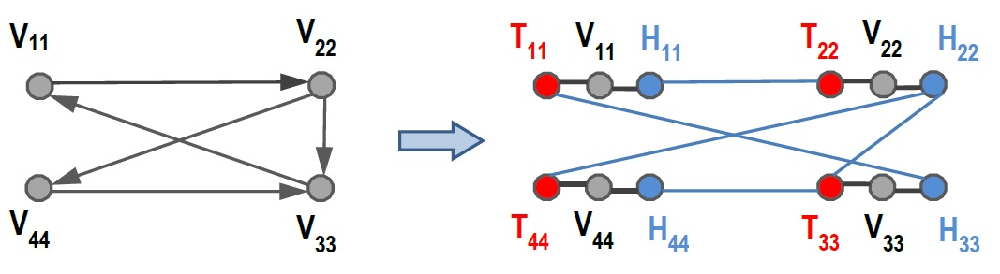

Programming Assignment 2 - Part 1 (tasks A,B)
CS3230 - Design and Analysis of Algorithms
Spring - 2015
Graphs Transformation
Background
Previously, Anka's team has successfully built a software module for fast multiplication. Now, they are integrating this software module into the spaceship's software system. In this software system, each software module may depend on other modules to run,
thus forming a big dependency graph. The team wants to check whether there is a simple cycle of dependencies that involes all modules. Anka hasn't found any efficent solution for this problem yet.
She realized that this problem is exactly the same as the Hamiltonian Cycle
problem, which is hard. To solve it, she may need to efficiently reduce the problem into other relevant problems. She decided to master the reduction technique, so she is doing some homeworks. Can you help her to transform the problems in C++ or Java?
Relevant Problems and Algorithm
Directed Hamiltonian Cycle problem (Dir_Ham_Cyc):
Consider a directed graph Gd = (V,E) of N vertices.
Decide whether there exists a simple directed cycle Cd that contains every vertex exactly once.
Undirected Hamiltonian Cycle problem (Undir_Ham_Cyc):
Consider an undirected graph Gu = (V,E) of N vertices.
Decide whether there exixts a simple undirected cycle Cu that contains every vertex exactly once.
Poly-Time Transformation Algorithm
Transformation from Dir_Ham_Cyc to Undir_Ham_Cyc:
Input: G = (Vg,Eg);
Build H = (V,E) -- an undirected graph, where:
1. Each vertex v in Vg is transformed into 3 vertices in V: hv (head-vertex of v), v, and tv (tail-vertex of v);
2. For each v in Vg: undirected edges (tv,v) and (v,hv) are in E;
3. Each directed edge (u,v) in Eg is transformed into an undirected edge (hu, tv) in E.
Output: H = (V,E)
See picture for example.

Task A (Verifier) [50 points]:
Given a graph G, and a list P of vertices. You have to check whether P forms an undirected Hamiltonian cycle in G.
Input:
First line of input is the number T of testcases. Next are T blocks of lines, each block describes a testcase.
In each block:
First line is N (number of vertices), M (number of edges)
Next M lines write 2 strings u,v describing an undirected edge (u,v), where u,v are names of the vertices.
Next line writes an integer number p - number of vertices in the path P.
Last line writes names of a p vertices, separated by a space.
Output:
For each testcase in the input, output the corresponding answer on one line, i.e.:
Output "YES" if P is a undirected Hamiltonian cycle, output "NO" otherwise.
Constraints:
Length of the vertex name is at most 6 characters.
1<=T<=50; 2<=N <=300; 2<=M <=30000.
Memory: 256M
Running time: 2 seconds per T testcases.
Sample input:
5
2 2
AA BB
BB AA
3
AA BB CC
3 4
V1 V2
V1 V3
V2 V3
V3 V1
4
V1 V2 V3 V1
3 4
V1 V2
V1 V3
V2 V3
V2 V1
4
V3 V1 V2 V3
3 4
AA bb
AA CC
bb CC
CC AA
3
AA bb CC
3 4
V1 V2
V1 V3
V2 V3
V1 V1
4
V1 V2 V1 V1
Sample output:
NO
YES
YES
NO
NO
Task B (Poly-Time-Reduction) [50 points]:
You have to transform an instance of Dir_Ham_Cyc into an instance of Undir_Ham_Cyc, such that an answer yes for the former implies an yes for the latter, and vice versa.
Your transformation must follow the algorithm given above, with following constraints:
if the name of the vertex in original graph is Vxxxx, then the head-vertex and tail-vertex of that vertex in transformation must have name
Hxxxx and Txxxx. See picture for example.
In addition, you need to output the edges in lexicographic order of the vertice's name.
Input:
First line of input is the number T of testcases. Next are T blocks of lines, each block describes a testcase (An instance of Dir_Ham_Cyc, that is, a directed graph Gd).
In each block: First line is two integer numbers: N (number of vertices), and M (number of edges)
Next M lines describe M edges: each line writes 2 strings u, v separated by a space, describing a directed edges (u,v), where u,v are names of the vertices.
Output:
For each testcase in the input, you have to output a corresponding transformed graph (An instance of Undir_Ham_Cyc, that is, undirected graph Gu), with the following blocks of lines:
First line: Nv (number of vertices), and then Me (number of edges)
Next Me lines: Name of two vertices u and v for each edge (u,v) of the transformed graph, separated by a space.
Constraints:
The name of vertices in the input is always started with "V", with length at most 6.
Since the transformed graph is undirected, an edge (u,v) is the same as (v,u). Thus, you have to count and output only the edge (u, v), where u <= v (lexicographic order).
The edges must be outputed in lexicographic order of vertices' name. That is, for two edges (u,v) and (x,y): if u < x, or if u==x and v < y, the edge (u,v) must be outputed before (x,y). See sample output for example.
1<=T<= 50; 2<=Nv<=300; 2<=Me<=30000
Memory: 256M
Running time: 2 seconds per T testcases.
Sample input:
1
4 5
V11 V22
V22 V33
V33 V11
V22 V44
V44 V33
Sample output:
12 13
H11 T22
H11 V11
H22 T33
H22 T44
H22 V22
H33 T11
H33 V33
H44 T33
H44 V44
T11 V11
T22 V22
T33 V33
T44 V44
(End of problem's description)